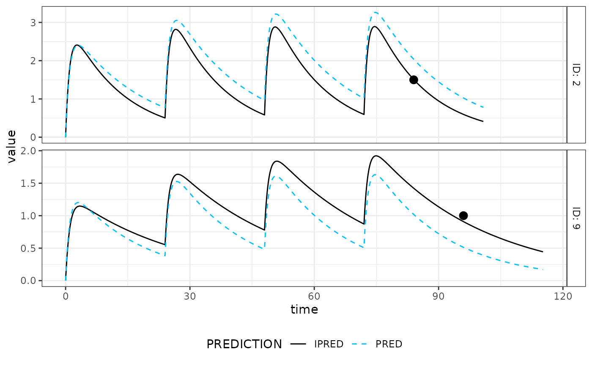
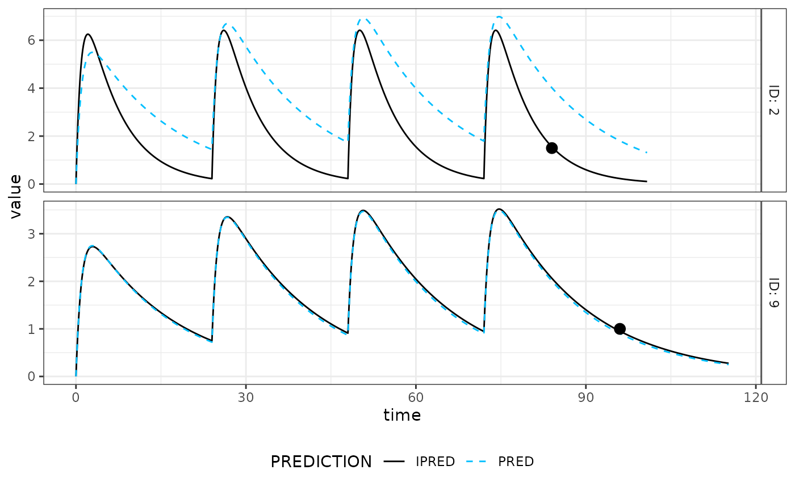
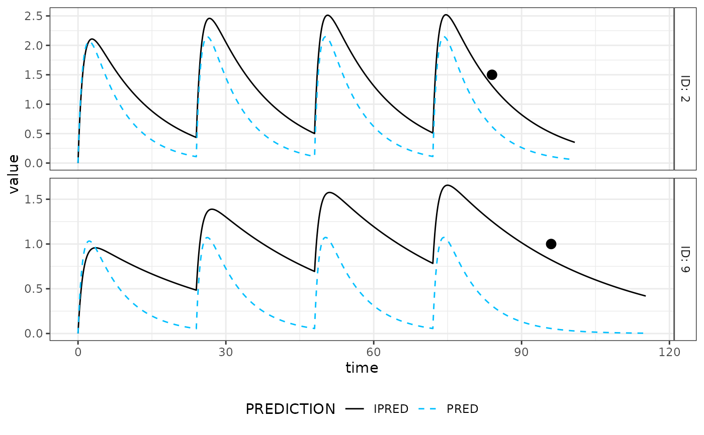
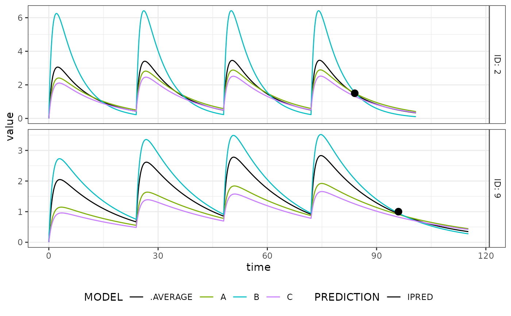

Model Averaging consists in analyzing the same data with different models and to average their predictions. In order to perform weighted means of clearance predictions, (or concentrations, or any metric of interest), it is necessary to compute the "weight" of each estimation. It is informed by the likelihood of estimation. Two weighting scheme are currently implemented, one based on the log- likelihood ("LL", the default), the other on the Akaike criterion ("AIC"). The method was previously described by Uster et al (2021) doi:10.1002/cpt.2065 .
Arguments
- ...
estimation objects generated with
mapbayest(), from which the weights will be computed- output_function
a unique function that takes any estimation object and returns a table with controlled variables, dimensions and attributes.
- scheme
scheme weight, either "LL" or "AIC"
- estlist
a list of estimation objects. Overrides
...- list_of_tabs, weights_matrix
respectively outputs of the
output_functionandcompute_weights()
Value
model_averaging()anddo_model_averaging(): a data.frame of the same dimensions and attributes as the outputscompute_weights(): a matrix with IDs as rows and estimation weights as columns
Examples
library(magrittr)
# Three different models: A, B, and C.
modA <- exmodel(1, add_exdata = FALSE)
modB <- mrgsolve::param(modA, TVCL = 2, TVVC = 30)
modC <- mrgsolve::param(modA, TVCL = 10)
# A common dataset that has 2 patients (ID 2 & 9)
data <- adm_rows(ID = 2, time = 0, amt = 200, addl = 3, ii = 24, cmt = 1) %>%
obs_rows(ID = 2, time = 84, DV = 1.5, cmt = 2) %>%
adm_rows(ID = 9, time = 0, amt = 100, addl = 3, ii = 24, cmt = 1) %>%
obs_rows(ID = 9, time = 96, DV = 1, cmt = 2)
# Three different estimation objects: A, B and C.
estA <- mapbayest(modA, data)
as.data.frame(estA)
#> ID time evid cmt amt mdv addl ii DV IPRED PRED ETA1
#> 1 2 0 1 1 200 1 3 24 NA 0.0000000 0.0000000 0.2619173
#> 2 2 84 0 2 0 0 0 0 1.5 1.5079450 2.0369872 0.2619173
#> 3 9 0 1 1 100 1 3 24 NA 0.0000000 0.0000000 -0.3343530
#> 4 9 96 0 2 0 0 0 0 1.0 0.9084841 0.5130508 -0.3343530
#> ETA2 ETA3
#> 1 -0.04095746 0.018137453
#> 2 -0.04095746 0.018137453
#> 3 0.09081568 -0.009543379
#> 4 0.09081568 -0.009543379
plot(estA) # Fit is pretty good

estB <- mapbayest(modB, data)
as.data.frame(estB)
#> ID time evid cmt amt mdv addl ii DV IPRED PRED ETA1
#> 1 2 0 1 1 200 1 3 24 NA 0.0000000 0.0000000 0.60101845
#> 2 2 84 0 2 0 0 0 0 1.5 1.5521686 4.0146734 0.60101845
#> 3 9 0 1 1 100 1 3 24 NA 0.0000000 0.0000000 -0.02315176
#> 4 9 96 0 2 0 0 0 0 1.0 0.9519116 0.9019644 -0.02315176
#> ETA2 ETA3
#> 1 -0.27110449 0.0583360191
#> 2 -0.27110449 0.0583360191
#> 3 0.01083324 -0.0008554457
#> 4 0.01083324 -0.0008554457
plot(estB) # Excellent fit

estC <- mapbayest(modC, data)
as.data.frame(estC)
#> ID time evid cmt amt mdv addl ii DV IPRED PRED ETA1
#> 1 2 0 1 1 200 1 3 24 NA 0.0000000 0.0000000 -0.5166319
#> 2 2 84 0 2 0 0 0 0 1.5 1.3165140 0.6204091 -0.5166319
#> 3 9 0 1 1 100 1 3 24 NA 0.0000000 0.0000000 -1.1283125
#> 4 9 96 0 2 0 0 0 0 1.0 0.8220509 0.0558673 -1.1283125
#> ETA2 ETA3
#> 1 0.08143646 -0.03858305
#> 2 0.08143646 -0.03858305
#> 3 0.27498847 -0.03210304
#> 4 0.27498847 -0.03210304
plot(estC) # Fit is worst

# Model averaging
model_averaging(A = estA, B = estB, C = estC)
#> ID time evid cmt amt mdv addl ii DV IPRED PRED ETA1
#> 1 2 0 1 1 200 1 3 24 NA 0.0000000 0.0000000 0.1025765
#> 2 2 84 0 2 0 0 0 0 1.5 1.4610651 2.0146790 0.1025765
#> 3 9 0 1 1 100 1 3 24 NA 0.0000000 0.0000000 -0.1677018
#> 4 9 96 0 2 0 0 0 0 1.0 0.9320958 0.7291321 -0.1677018
#> ETA2 ETA3
#> 1 -0.05068751 0.009576042
#> 2 -0.05068751 0.009576042
#> 3 0.04769391 -0.004896668
#> 4 0.04769391 -0.004896668
# Weighted average of the table returned by as.data.frame(est))
# Internally, it first computes the "weight" of each model such as:
W <- compute_weights(A = estA, B = estB, C = estC)
# Then multiply the prediction table with each weight such as:
do_model_averaging(
list_of_tabs = list(
A = as.data.frame(estA),
B = as.data.frame(estB),
C = as.data.frame(estC)
),
weights_matrix = W
)
#> ID time evid cmt amt mdv addl ii DV IPRED PRED ETA1
#> 1 2 0 1 1 200 1 3 24 NA 0.0000000 0.0000000 0.1025765
#> 2 2 84 0 2 0 0 0 0 1.5 1.4610651 2.0146790 0.1025765
#> 3 9 0 1 1 100 1 3 24 NA 0.0000000 0.0000000 -0.1677018
#> 4 9 96 0 2 0 0 0 0 1.0 0.9320958 0.7291321 -0.1677018
#> ETA2 ETA3
#> 1 -0.05068751 0.009576042
#> 2 -0.05068751 0.009576042
#> 3 0.04769391 -0.004896668
#> 4 0.04769391 -0.004896668
# If you do not want to perform an average of the full table, you can specify
# a function that takes the estimation object as an input and returns
# value(s) of interest: a single prediction, a clearance value, a full
# table of augmented predictions... as long as the structure of the final
# object is the same whatever the model.
reframe <- function(est){
# From any estimation object, return a table with ID, time and predictions
as.data.frame(est)[,c("ID", "time", "DV", "IPRED")]
}
model_averaging(A = estA, B = estB, C = estC, output_function = reframe)
#> ID time DV IPRED
#> 1 2 0 NA 0.0000000
#> 2 2 84 1.5 1.4610651
#> 3 9 0 NA 0.0000000
#> 4 9 96 1.0 0.9320958
# Make a plot that compares predictions
List_aug_tab <- lapply(
X = list(A = estA, B = estB, C = estC),
FUN = function(x) augment(x)$aug_tab
)
List_aug_tab$.AVERAGE <- do_model_averaging(List_aug_tab, W)
mapbayr_plot(
aug_tab = dplyr::bind_rows(List_aug_tab, .id = "MODEL"),
obs_tab = data,
PREDICTION = "IPRED",
MODEL_color = c(.AVERAGE = "black")
)
